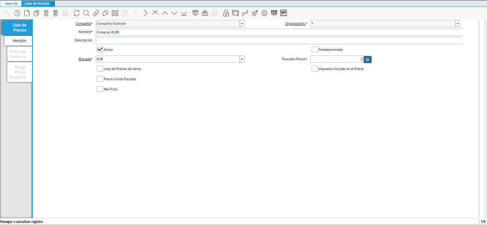
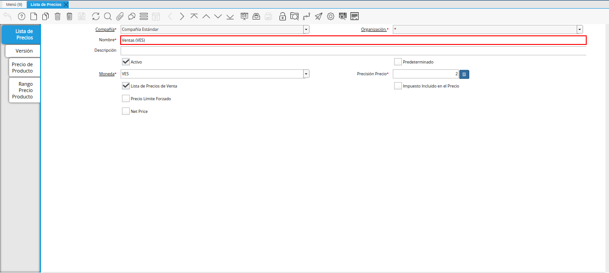
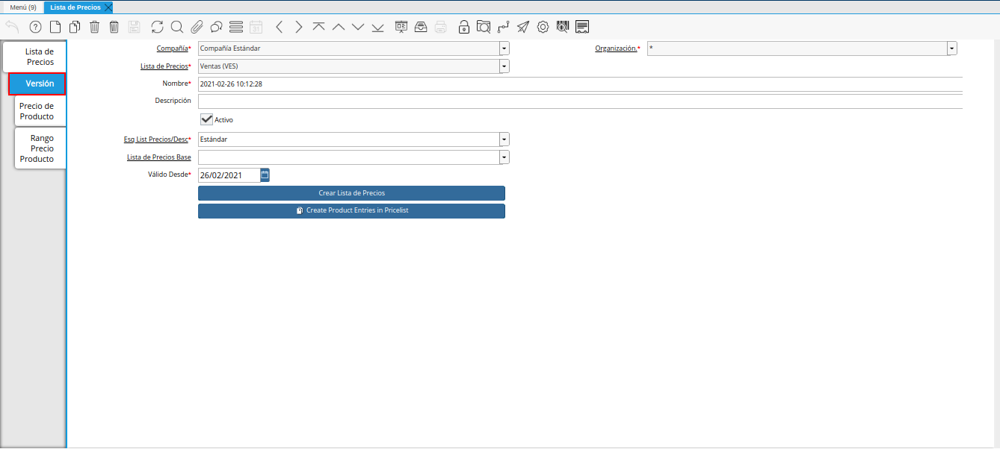
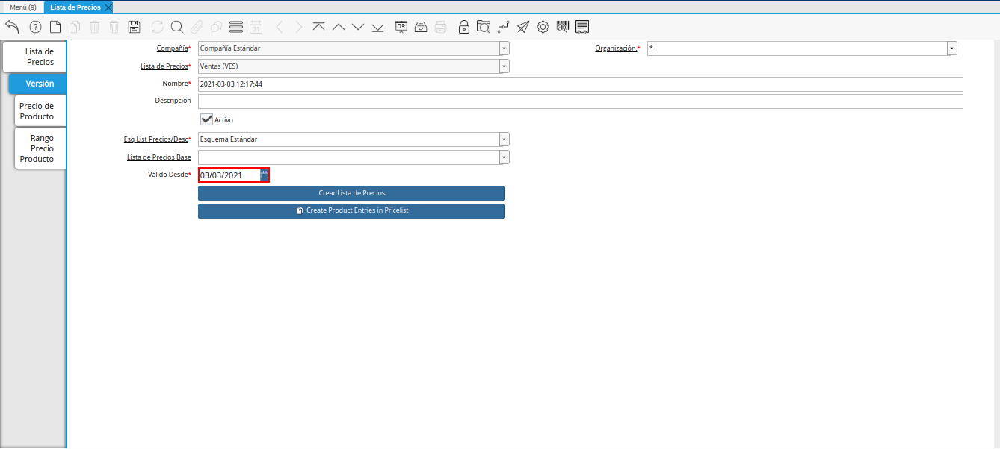
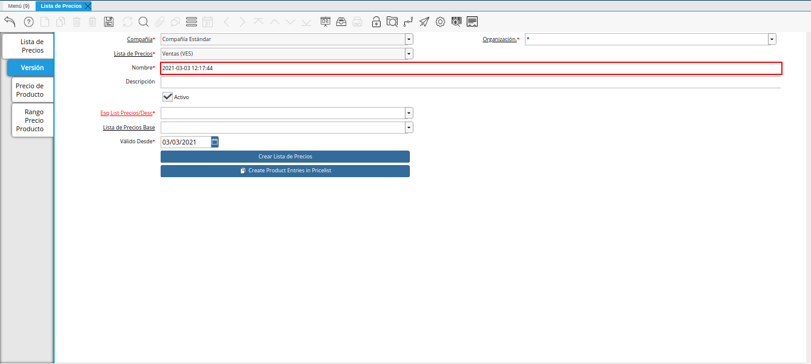
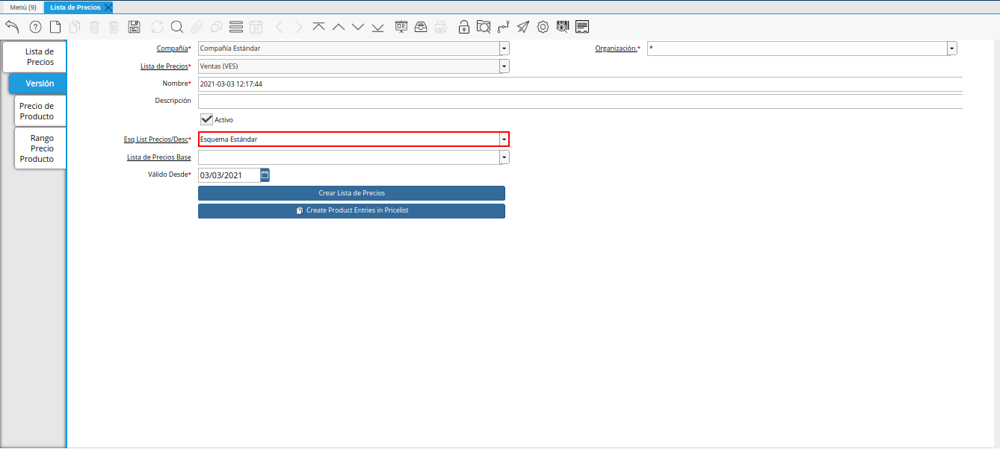
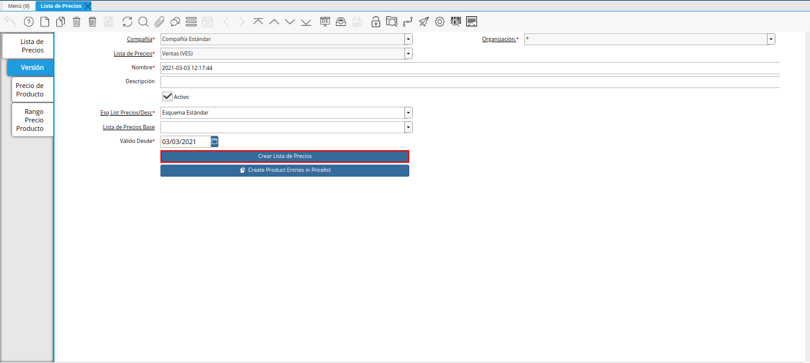
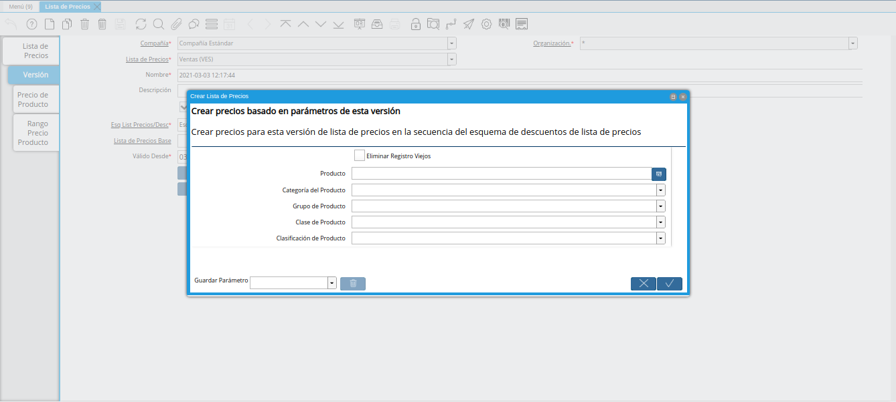
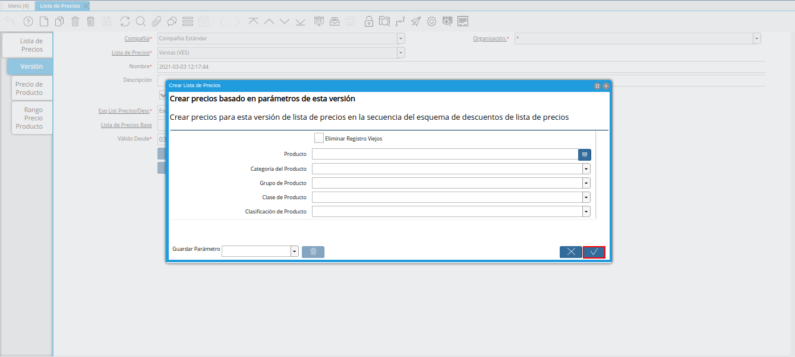
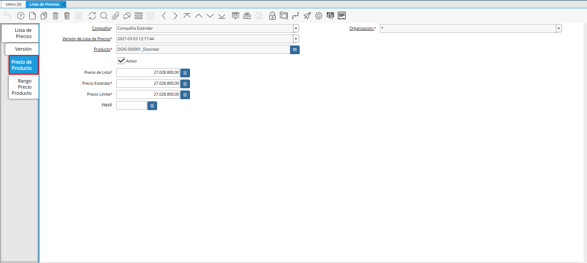

4.1.3. Crear Lista de Precios desde Última OC Procesada¶
Para ejemplificar el caso de creación de una lista de precios desde la última orden de compra procesada, se tiene la siguiente configuración en el esquema de lista de precios:
Tipo de Conversión: BCV
Categoría del Producto: Suministro de Dotaciones
% Descuento Sobre Precio de Lista: -20,0
% Descuento Sobre Precio Estándar: -20,0
% Descuento Sobre Precio Límite: -20,0
Adicional a ello, se tiene la orden de compra “OCN-27”, elaborada en moneda “USD”. La misma cuenta con el producto “DOIS-000001_Estandar”, en la cual su precio de compra es “12,00”.
Note
El producto debe estar incluido en una orden de compra y dicha orden debe estar en estado “Completo”. Recuerde que al completar la orden de compra, los precios de compra de los productos son cargados a la pestaña “Compras” de cada producto incluido en la orden.
De igual manera, se tiene la tasa de cambio de “VES” a “USD” y viceversa, con monto de “1.877.000,00”, a la fecha “03/03/2021”.
En base a las especificaciones nombradas anteriormente, se procede a explicar el procedimiento a seguir para generar la lista de precios desde la última orden de compra procesada.
Ubique y seleccione en el menú de ADempiere, la carpeta “Gestión de Materiales”, luego seleccione la carpeta “Reglas de Gestión de Materiales”, por último seleccione la ventana “Lista de Precios”.

Imagen 1. Menú de ADempiere
Podrá visualizar la ventana “Lista de Precios”, con todos los registros de listas de precios de compras y ventas.

Imagen 2. Ventana Lista de Precios
Warning
La información de los campos que contiene la pestaña “Lista de Precios”, no debe ser modificada por ningún motivo. De igual manera, no se debe tildar o destildar ningún check de los que contiene dicha pestaña.
Ubique el registro de lista de precios de “Ventas (VES)”.

Imagen 3. Lista de Precios Ventas (VES)
Seleccione la pestaña “Versión”.

Imagen 4. Pestaña Versión
Seleccione el icono “Registro Nuevo”, ubicado en la barra de herramientas de ADempiere.
Imagen 5. Icono Registro Nuevo
Seleccione en el campo “Válido Desde”, la fecha de inicio del periodo de validez del registro que se encuentra realizando.

Imagen 6. Campo Válido Desde
Introduzca en el campo “Nombre”, el nombre correspondiente a la versión de lista de precios que se encuentra creando.
Este campo contiene como nombre por defecto, la fecha y la hora en el cual fue creado el registro.

Imagen 7. Campo Nombre
Introduzca en el campo “Descripción”, una breve descripción correspondiente al registro que se encuentra realizando.

Imagen 8. Campo Descripción
Seleccione en el campo “Esq List Precios/Desc”, el esquema de descuento correspondiente.

Imagen 9. Campo Esq List Precios/Desc
Seleccione el icono “Guardar Cambios”, ubicado en la barra de herramientas de ADempiere.
Imagen 10. Icono Guardar Cambios
Seleccione la opción “Crear Lista de Precios”, desplegada por el icono “Proceso”, ubicado en la barra de herramientas de ADempiere.
Esta opción permite crear los precios de los productos desde la última orden de compra procesada, basandose en el tipo de conversión, descuento y margen de ganancia, previamente configurado en el esquema de descuento.
Si los precios de los productos se encuentran en una moneda diferente a la moneda de la compañía, ADempiere toma los precios de la pestaña “Compras” de cada producto y en base a la moneda que este asociada a dicha pestaña y a la moneda de la lista de precios, toma la configuración del esquema de lista de precios, realizando la conversión a la tasa de la fecha que tenga la versión de lista de precios y aplica el descuento o margen de ganancia configurado en el mismo (si lo tiene), para finalmente cargar dichos precios a la lista de precios.

Imagen 11. Opción Crear Lista de Precios
Podrá visualizar la ventana “Crear Lista de Precios”, con diferentes campos que permiten generar la lista de precios en base a lo requerido por el usuario.

Imagen 12. Ventana Crear Lista de Precios
Seleccione la opción “OK”, para ejecutar el proceso y generar la lista de precios en base a lo seleccionado.

Imagen 13. Opción OK
Seleccione la pestaña “Precio de Producto” para verificar los precios de los productos, creados desde la pestaña “Compras” de cada producto.

Imagen 14. Pestaña Precio de Producto
Note
El resultado a obtener por producto en el ejemplo expuesto anteriormente sería:
Precio de Compra del Producto (DOIS-000001_Estandar): 12,00
Tasa de Cambio: 1.877.000,00
Margen de Gancia por Categoría (Suministro de Dotaciones): 20%
Resultado de Operación:
Precio de Compra del Producto (DOIS-000001_Estandar) * Tasa de Cambio = Precio de Compra Convertido
Precio de Compra Convertido + Margen de Gancia por Categoría (Suministro de Dotaciones) = Precio del Producto (DOIS-000001_Estandar) para la Venta
Ejemplo:
12,00 * 1.877.000,00 = 22.524.000,00
22.524.000,00 + 20% = 27.028.800,00